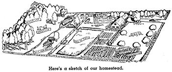

AN old farmer struck it rich in oil and his family persuaded him to buy a $4,000 automobile. Never having had anything better than a second-hand Model T, the old boy insisted on only one thing for the new car - the most colossal and expensive set of bumpers he could find!
I wish we'd had some good bumpers when we decided to move to the country. We bumped our noses on land, on the layout of our house, on the location of our barn, fruit trees, and pasture - on nearly everything a family could blunder at. I hope you'll profit by our mistakes!
Setting up a productive country home is probably the biggest and most important job any of us attempt during our lifetime. Despite all of the people who have needed some basic data, on setting up a homestead, no one had completely worked the methods out and put them on paper. Every new family has been left to stumble its own way toward the answers.
Not long after our first edition of the "Have-More" Plan went out we began to get letters asking for help in laying out a place. Of course, we couldn't give specific advice without seeing each piece of property; and then, people have different ideas of what they want to do with their place.
Even though no one layout will fit everybody's ideas and site, there are certain basic points that ought not to be violated.
For example, where should you locate your house in relation to the highway? (If you do this right you can probably get the town snow plow to do your snow shovelling for coffee and doughnuts.) Where should your barn be placed with reference to the house? Toward what compass points should house and barn face?
What are the best locations for garden, orchard, pasture, hayfield? In placing fruit trees how much space should be allowed for them to mature without crowding? How can fencing and gates be placed for easy pasture rotation and so livestock can always get water without your having to carry it?
In planning the house itself, how can you start small and yet make additions through the years so that the finally completed homestead is attractive and efficient for country living?
If you plan your place correctly from the beginning, you will save countless steps in the years to come. You can actually cut your chore time in half. One minute saved twice a day on chores equals 12 hours a year!
Have a Plan
Before you lay out your place you ought to be able to answer all the above points and more too. Even if you're buying a country house that's already built you should have a definite plan for refitting the house and land to your use. Over and over I've seen city people buy a farm, remodel the house but let the land go to rack and ruin. Even if you can't use all the land you've bought, you should learn enough about land management so you can rent your unused land to a neighbor and see that he keeps it in a good state. Idle land deteriorates just as fast as an idle house.
When we moved to the country about the only layout we could find to help us was the diagram below. Even though it shows so little detail as to be of questionable help to the novice, it has two major faults. The combination barn and poultry house should be located where the berry patch is - this will be painfully evident to anyone who has had to carry 100 pound sacks of grain and 150 pound bales of hay from the end of the proposed driveway 90 feet or so to the barn. The second questionable point is that far too many trees are shown in the orchard - a family couldn't possibly eat all the apples, peaches, pears, and cherries which would total about 75 bushels when these trees were mature. Of course, you might sell the surplus, but it is difficult to make a small part-time orchard pay.
At the top of the next page is a sketch of our homestead. The things wrong with it are errors that any novice is apt to make and if we tell you about them you ought to avoid making them. First, although very pretty, there is too much lawn. Our house sits 90 feet back from the road and the front and back lawn take a good hour to mow each week. Second, our small barn is too close to our neighbor's property; there is no room for a poultry run in back of the barn - in front is our backyard play area. Third, our quarter-acre hayfield isn't large enough. Fourth, there are too many trees in our pasture - good pasture grass needs sunlight. Fifth, originally our house sat right in the middle of a woods. We believed this the best way to have trees around the house, believing it would be easy enough to clear land for garden, pasture, and crops while "only God could make a tree". However, we found it is cheaper to build your homestead on clear land and plant a couple of big trees.
Our total acreage is only about 2 1/2. Three to five acres would give us enough pasture for our livestock and enough hay . . . . we could then depend on our place to supply us with over 75% of all our food requirements and a high percentage of the roughage and grains needed to feed our livestock.
At the bottom of page 8 is a cut of an "ideal" layout for a productive country home. The drawing is available in full size (about as large as the top of a bridge table). Two experts helped with this "ideal" homestead plan: Milton Wend, author of How to Live in the Country Without Farming and John H. Whitney, R.A., an architect who specializes in designing country homes.
About 40 pages of description accompany this excellent plan; all the details can't be given here, but I'd like to point out that this basic plan of the "homestead area" (the country house, garden, barn, orchard, lawn, pastures, etc.) is a good point of departure if you're interested in any of the five productive homes described on page 6.
For example, suppose you want only an acre place in the country where you can have a lovely home, a garden, some dwarf fruit trees, and maybe some chickens. An acre is more than enough room; an acre, remember, is 209 feet by 209 feet. The portion of the ideal layout shown in the lower left-hand corner of this page is just over an acre. You'll notice that this "basic acre" includes a large house, an orchard of standard trees, barn and barnyard, a good-sized garden, flower gardens, lawns, driveways, and even some pasture and hayfield. The pasture and hayfield are not shown complete - the wavy line at the top of the cut indicates that these are only partially shown.
Shown below is a suggested layout for a 4 acre homestead. To the original 2 acre house plot, 2 additional acres are attached to rear. These 4 acres of good land would not only provide the family vegetables, fruit and berries but more than enough pasture and hay for two or three milk goats or pasture for a cow and a good part of a cow's hay requirements. There is also room for a pig or two plus other livestock.
On the front cover is a suggested layout for a 2 acre homestead, and on page 28 is shown a suggested layout for a half-acre.
We emphasize that these are only suggested layouts. Each family will have its own ideas on just how to manage their own particular place.
If you wanted a larger place, a part-time farm where you could, if necessary, grow 75% of the family's food, then you'd want more pasture space and hayfield. But the basic acre is still an excellent layout.
Then again, if you wanted to carry on a business at home, the office and "shop" to the left of the living room could be built. Naturally, this could be as small or as large as needed for your business.
If you want a commercial farm, then this same homestead acre is a good layout. You'd still want a kitchen garden for home use even if you were growing tobacco, or flowers, or fruit; if you were running a commercial dairy or a poultry business then you'd drop your goats or cow out of the small barn, but might well have the rest of the items. Naturally, on a commercial farm you'd add to the basic acre as much land as you needed.
As a place to retire you might want an acre, or enough for a part-time farm.
You can see that this basic acre is the key to a productive country home. Even though the house may not suit you, or the exact location of the items may be impossible to achieve, due to the fact that you are remodelling an existing place, or even because you want your place laid out differently, I think you'll find that this "ideal layout" makes a good point of departure. It does indicate basic principles that ought to be kept in mind.
For example:
1.) Every bit of land should be used advantageously.
2.) Garden rows should be of good length for easy cultivation; and run North and South for equal sunlight.
3.) Pasture should be fenced into plots for rotation. Pasture gates should be wide enough for entry for haying and plowing equipment.
4.) Vegetable garden should be han dy to kitchen.
5.) Lawn and shrubbery arranged attractively, yet easily cared for.
6.) Child's play area screened from street and located so it can be watched from the house.
7.) Compost heap should be placed between barn and garden.
8.) Trees should be spaced so as not to be crowded at maturity.
9.) Shower, bath, dressing room should be accessible from outside.
10.) Barn should be to lee of house; close enough to make supervision of livestock easy.
11.) Adequate closet and storage space in house.
12.) Space for good home workshop.
13.) Housing for garden tools, wheelbarrow, lawnmower, small tractor.
14.) A cold storage room for vege tables and canned goods.
15.) Fencing so arranged that livestock may be turned loose from the barn.
17.) Space for home freezer, laundry,fireplace wood.
18.) Orchard should not shade garden.
This will give you an idea of some of the things that you ought to think about when planning a homestead.
Suggested Reading:
Layout for a Productive Homestead by Milton Wend, John H.
Whitney, R. A., & Ed Robinson; $1.50.
How to Have a Good Lawn, 35 cents
48 Rapid Growing Shade Trees, 35 cents How to Build a Stone Wall, 35 cents
Nut Trees for Northern Homesteads, 35 cents
If you're thinking of having a place of your own - or you want to
lay your present place out more efficiently send for "Layout for a
Productive Homestead" from which this small reproduction was
made.
|
|
 |
|